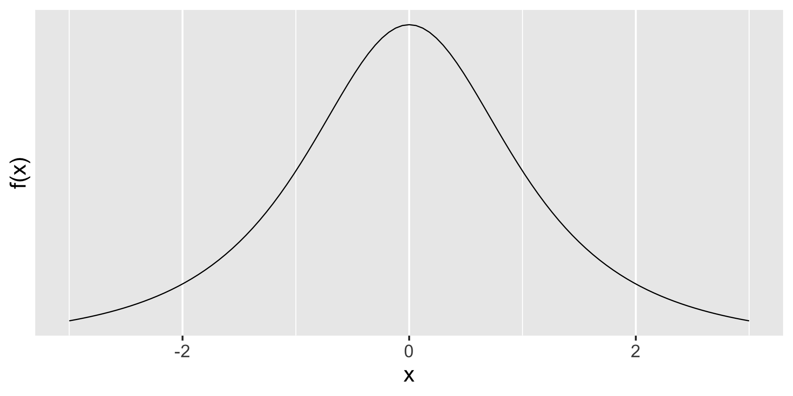
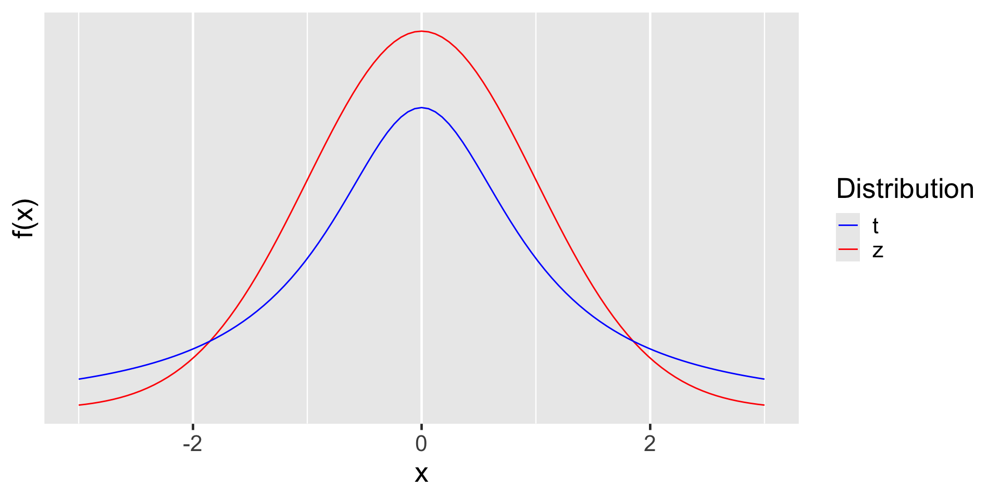
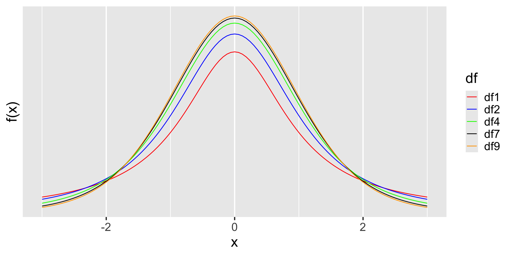
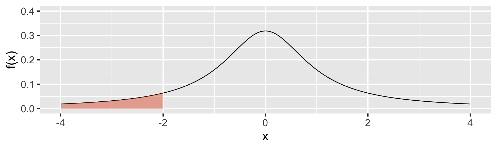
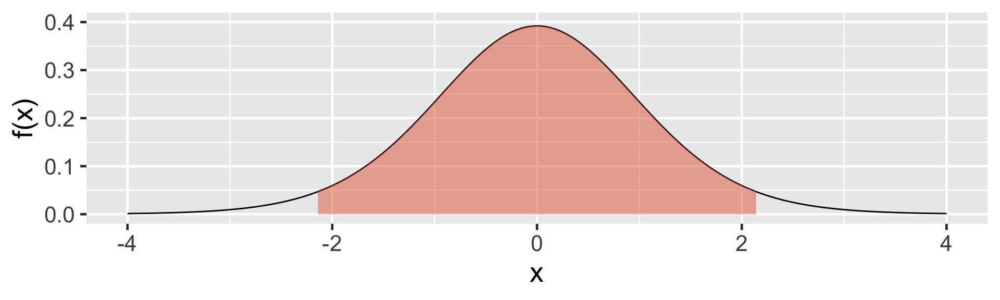
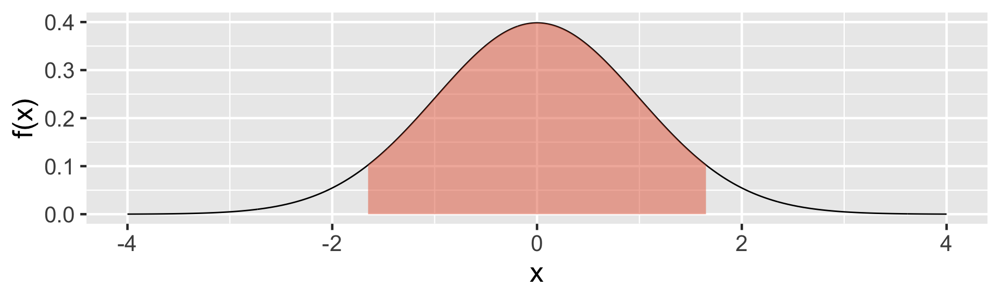
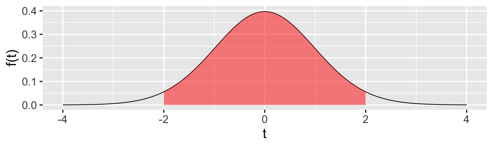
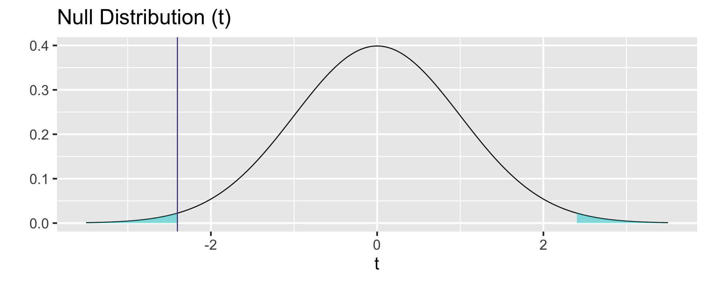

[1] 0.1475836Inference for Single Mean
Dr. Mine Dogucu
Uses of Normal Distribution
- SAT scores are normally distributed we were able to use normal distribution.
- Baby weights are normally distributed we were able to use normal distribution.
- According to Central Limit Theorem, sample proportions are approximately normally distributed (if certain conditions are met).
- According to Central Limit Theorem, difference of two proportions are approximately normally distributed (if certain conditions are met).
What about Single Mean?
- According to Central Limit Theorem, sample means are approximately normally distributed (if certain conditions are met).
Conditions
We can rely on Central Limit Theorem in order to make inference for a single mean if the following conditions have been met
Independence The sample data must be independent.
Normality If the sample size is small, then the sample data must come from a population with a normal distribution.
Using CLT for Single Mean
If the conditions are met then
\(\bar x \sim \text{approximately }N(mean = \mu, sd = \frac{\sigma}{\sqrt{n}})\)
We have a problem! We do not know \(\sigma\) so we may not calculate the standard error easily.
How did we handle this problem before?
When making inference for single proportion and difference of two proportions
\(p \sim \text{approximately } N(mean = \pi, sd = \sqrt{\frac{\pi(1-\pi)}{n}})\)
\((p_1 - \hat p_2) \sim \text{approximately } N((mean = \pi_1 - \pi_2), sd = \sqrt{\frac{\pi_1(1-\pi_1)}{n_1} + \frac{\pi_2(1-\pi_2)}{n_2}})\)
we did not know the population proportions. How did we deal with this problem when calculating standard error?
How did we handle this problem before?
We used the sample proportions.
How can we handle our current problem?
Since we do not know \(\sigma\), the population standard deviation, we will instead use \(s\), the sample standard deviation.
Using \(s\) instead of \(\sigma\) creates a problem in estimation.
Rather than using Normal distribution, we will now rely on \(t\)-distribution.
t-distribution
t-distribution vs Normal Distribution
t-distribution
In \(t\)-distribution, we will use one parameter only which is named degrees of freedom.
\(df = n - 1\)
t-distribution with different df
t-distribution vs Normal Distribution
Note that as degrees of freedom increases t-distribution approaches a normal distribution.
t-distribution using R

What proportion of values are below -2 in this distribution?
\(X \sim t_{df = 1} \text{ then }P(x \leq -2)\)
t-distribution using R
Below which value does the 14.75836% of the data lie?
Where does the middle 95% of the data lie when \(df = 14\)?
95% of the data lies between -2.144787 and 2.144787
Where does the middle 90% of the data lie when \(df = 149\)?
90% of the data lies between -1.6551445 and 1.6551445
Confidence Interval
Confidence Interval Review
Confidence Interval = point estimate \(\pm\) critical value \(\times\) standard error of the estimate
| point estimate | critical value | standard error of the estimate | |
|---|---|---|---|
| single proportion | \(p\) | z* | \(\sqrt{\frac{p(1-p)}{n}}\) |
| difference of two proportions | \(p_1-p_2\) | z* | \(\sqrt{\frac{p_1(1-p_1)}{n}+\frac{p_2(1-p_2)}{n}}\) |
Confidence Interval for Single Mean
point estimate \(\pm\) critical value \(\times\) standard error
\(\bar x\) \(\pm\) critical value \(\times\) standard error
\(\bar x \pm t^*_{df}\times\) standard error
\(\bar x \pm t^*_{df} \times \frac{s}{\sqrt n}\)
Exercise
Prof. Garcia-Maldonado would like to know his average daily water intake. He records his water intake in his fitness app on his phone on 50 random days. His app shows that on average he drank 3.7 liters of water daily with standard deviation of 0.5 liters. Calculate a 95% confidence interval for average daily water intake of Prof. Garcia-Maldonado.
Conditions
Independence Despite the fact that Prof. Garcia-Maldonado has randomly selected the days he recorded data there may be possible violation of the independence condition. Consider that he selected 50 days in a two month frame. There will be many data points that are collected on consecutive days. If he has certain patterns of water drinking in a week then consecutive day data would be dependent and thus the condition of independence wuld be violated. However if he selected 50 days in a two year time frame it is possible that the data may meet the independence condition.
Normality The sample size is greater than 30. Are there any outliers in the data?
Known
\(\bar x\) = 3.7
\(s = 0.5\)
\(n = 50\)
Confidence Interval
\(\bar x \pm t^*_{df} \times \frac{s}{\sqrt n}\)
\(3.7 \pm t^*_{df} \times \frac{0.5}{\sqrt{50}}\)
Finding critical value for 95% CI when \(n = 50\)
The critical value is:
Confidence Interval
\(3.7 \pm 2.009575 \times \frac{0.5}{\sqrt{50}}\)
We are 95% confident that the average daily water in take of Prof. Garcia- Maldonado is between 3.557902 and 3.842098 liters.
Hypothesis Testing
Steps
- Set hypotheses
- Identify Sampling Distribution of \(H_0\)
- Calculate p-value
- Make a Decision and a Conclusion.
Review
To calculate the p-value
- We assume the null hypothesis is true.
- Based on the null hypothesis we plot/imagine the sampling distribution.
- We then examine where the sample statistic falls in this distribution.
- We then calculate the probability (p-value) of observing a sample statistic that is at least as extreme as the one that we have observed if the null hypothesis were true.
The American Community Survey (ACS) is an ongoing survey by the U.S. Census Bureau that is conducted to gather information on people residing in the United States. We would like to know whether those who are employed work 40 hours a week on average. The ACS results in 2012 indicate that among the 843 people who were employed, the average work hour per week was 38.9311981 hours and standard deviation was 12.9151263 hours.
\(\bar x = 38.9312\)
\(s = 12.91513\)
\(n = 843\)
Conditions
Independence We are not given enough information about the sampling method used for this survey. Since the aim of the survey is to gather information from people in the US and given that the survey is conducted by US Census we would expect some form of randomized sampling. However, there are sampling strategies such as cluster sampling. In such cases, a family may be selected to be surveyed. In this case, the data would not meet the independence condition. We should check US Census website to gather further information on sampling strategies. For now, we will assume independence.
Normality Sample size > 30, outliers?
Steps
- Set hypotheses
- Identify Sampling Distribution of \(H_0\)
- Calculate p-value
- Make a Decision and a Conclusion.
Step 1 : Set hypotheses
\(H_0: \mu = 40\)
\(H_A: \mu \neq 40\)
Step 2: Sampling Distribution of \(H_0\)
When certain conditions are met then:
\(\bar x \sim \text{approximately } N(mean = \mu, sd =\frac{\sigma}{\sqrt{n}})\)
We will assume \(H_0\) is true and since we do not know the standard deviation (\(\sigma\)) in this normal distribution we will instead use \(s\) when calculating the standard error and use a \(t\) distribution instead.
\(se = \frac{12.91513}{\sqrt{843}}\)
\(se = 0.4448207\)
Step 3: Calculate p-value
How many standard deviations (standard errors) is the point estimate away from the mean in the sampling distribution of the null hypothesis?
\(t = \frac{\bar x - \text{null}}{se}\)
\(t = \frac{38.9312-40}{\frac{12.91513}{\sqrt{843}}} = -2.402766\)
Step 3: Calculate p-value
Step 4: Make a Decision and a Conclusion.
If the null hypothesis were true ( \(\mu = 40\) ) then probability of observing a sample statistic that is at least as extreme as the one that we have observed ( \(\bar x = 38.9312\) ) would be 0.0164871. We consider this to be an evidence against the null since p-value (0.0164871) is less than 0.05. In other words, if the null were true, it would be quite unlikely to observe a sample mean that is at least that extreme but since we have observed this sample, it is unlikely that the null is true so we reject the null and conclude that the average work time in the US in 2012 differs significantly from 40.